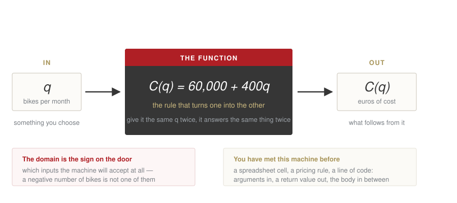
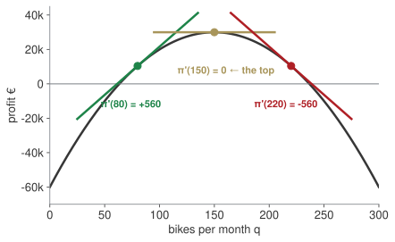

Week 2 · Thursday 1 October 2026 · 10:00–13:00
MBA03 Research & Quantitative Business Methods · European School of Economics, Florence
PAPER · 15 minutes
One of you takes us through it. Pick one drill you got stuck on. We want the working, the wrong turn included.
Not an exam: the point is to see how you got there.
Block AHow many bikes before we stop losing money?100 — fixed cost ÷ contribution: 60,000 / 600
Block BHow many bikes should we make?150, for €30,000 — vertex −b/2a; profitable between 63 and 237
Block CHow long until revenue doubles?6.1 years — unknown in the exponent: t = \ln 2 / \ln 1.12
Block DIs this battery cell within spec?No — |c - 500| \le 15 means [485, 515]; 483 is out
The vertex formula only works for parabolas. Today: the tool that works for any curve.
| Wk | Date | What you can do by hand |
|---|---|---|
| 1 | 24 Sep | equations, quadratics, logs ✓ |
| 2 | 1 Oct | read a function; limits; the derivative |
| 3 | 8 Oct | study a function; optimise; integrate |
| 4 | 15 Oct | interest, discounting, NPV |
| 5 | 22 Oct | bonds, duration, convexity |
Today serves both assessments.
The midterm asks you to study a cost, a revenue and a profit function. Everything in that study is built on the derivative.
Three of the five items in the final’s calculus question are here: a limit that factors, a derivative term by term, and a function recovered from its derivative.
Last week you found the top of a hill with a formula that only works for parabolas. Today you get the one that works for any curve.
BRIEFING · 35 minutes
Before any mathematics: what the midterm asks, how it is marked, and what a good one looks like.
Questions now, not in the last week of October.
Block AWhat a function is, once you have to use onedomain · the four shapes
Block BWhat happens near a point you cannot reachlimits
Block CWhat does one more bike do to profit?the derivative
Block DFrom the marginal back to the totalrunning it backwards

You put something in, something comes out, and what happens inside is the function. Nothing else about it matters.
Keep this picture. It is the same picture as a cell in a spreadsheet, a pricing rule, and a line of code — arguments in, a value out, a body in between. We will use it all term.
| straight line | C(q) = 60,000 + 400q |
| parabola | π(q) = −4q² + 1200q − 60,000 |
| exponential | R(t) = 1.2 · 1.12ᵗ |
| logarithm | R(q) = 30 ln(q + 1) |
Each one is a sentence about a business, written so it can be computed.
Domain is the first question, always: for which q does this mean anything?
\begin{aligned} \sqrt{q-20} \;&\text{ needs } q \geq 20 \\[2pt] \ln(q-5) \;&\text{ needs } q > 5 \\[2pt] \tfrac{120}{q-40} \;&\text{ breaks at } q = 40 \end{aligned}
The exam asks “state the domain” and expects an interval, with the bracket chosen on purpose.
Bet before we compute
π(100) and π(200). One is bigger. Which, and by how much?
Ask what the symbol is asking for, and the restriction falls out on its own.
| the symbol | the question it asks | when there is no answer |
|---|---|---|
| \sqrt{x} | what number, times itself, gives x? |
x < 0 — a square is never negative |
| \ln x | to what power must e be raised to give x? |
x ≤ 0 — a positive base never reaches zero |
| \dfrac{a}{x} | how many x fit into a? |
x = 0 — nothing fits into nothing |
So \sqrt{q-20} needs the thing inside, not q, to be at least zero: q − 20 ≥ 0.
Three rules, or one habit: put the bracket’s contents where the rule’s own question can be asked. You will never have to remember which is ≥ and which is > — √0 = 0 is fine, ln 0 is not.
PAPER · drills.md
10 minutes. Show all work, exam style. I come round.
Block AWhat a function is, once you have to use onedomain · the four shapes
Block BWhat happens near a point you cannot reachlimits
Block CWhat does one more bike do to profit?the derivative
Block DFrom the marginal back to the totalrunning it backwards
The rent is €60,000 whether you build one bike or a thousand. Split it between the bikes:
AC(q) = \frac{60{,}000 + 400q}{q} \;=\; \underbrace{\frac{60{,}000}{q}}_{\text{the rent, shared}} + \underbrace{400}_{\text{the parts, per bike}}
Bet before we compute
At 30 bikes a month, what does one bike cost the firm? At 300?
The gold bar is the rent per bike. It shrinks; the €400 floor never moves.
\lim_{q \to 0^{+}} AC(q) = +\infty \qquad\qquad \lim_{q \to \infty} AC(q) = 400
At q = 0 the expression means nothing — you cannot divide by nothing — but you can ask what happens near zero, and the answer is: ruinous. One bike carries the whole rent.
Far out, the shared rent vanishes and average cost settles onto the variable cost. It never goes below €400, because every bike really does need €400 of parts.
Economies of scale, in two limits. And a limit is exactly this: not the value at a point, but the value the function heads towards as you approach it.
\lim_{q \to 10} \frac{q^{2} - 100}{q - 10}
Substitute and you get 0/0, which says nothing. So do not substitute first.
\frac{(q-10)(q+10)}{q-10} = q + 10 \;\longrightarrow\; 20
Board sentence
0/0 is not an answer, it is an instruction: factor, cancel, then substitute.
PAPER · drills.md
12 minutes. D5 is a one-sided limit in exactly the form the final exam uses.
Block AWhat a function is, once you have to use onedomain · the four shapes
Block BWhat happens near a point you cannot reachlimits
Block CWhat does one more bike do to profit?the derivative
Block DFrom the marginal back to the totalrunning it backwards
At 80 bikes a month, what does the eighty-first bike add?
Bet before we compute
More than €1,000, between €0 and €1,000, or negative? Commit to one.
The honest way to ask it: take two quantities, measure the change in profit, divide by the change in quantity. Then let the two quantities come together.
The slope over an interval becomes the slope at a point.
\pi'(a) \;=\; \lim_{h \to 0} \frac{\pi(a+h) - \pi(a)}{h}
You will use this definition roughly twice in your life. What you will use every day is what it produces:
qⁿ |
n qⁿ⁻¹ |
| a constant | 0 |
ln q |
1/q |
e^(kq) |
k e^(kq) |
| sums | differentiate term by term |
Never ask “what is the derivative of this?” Ask the questions in order.
| ask | then |
|---|---|
| 1. Is it a sum? | split it; do each piece alone |
2. A number, no q? |
it becomes 0 |
3. A power a·qⁿ? |
n comes down in front, the power drops by one |
4. A log a·ln(q)? |
it becomes a/q |
-4q^{2} \to -8q \qquad 1200q \to 1200 \qquad -60{,}000 \to 0 \qquad 30\ln q \to \tfrac{30}{q}
\pi(q) = \underbrace{-4q^{2}}_{3} + \underbrace{1200q}_{3} \underbrace{- \,60{,}000}_{2} \;\longrightarrow\; \pi'(q) = -8q + 1200
A lone q is q¹, so rule 3 leaves just the number in front of it.
ln(q + 1) is not ln q. There is a second function hiding inside the first, and the midterm’s revenue function is exactly this shape.
\frac{d}{dq}\,f\big(g(q)\big) \;=\; f'\big(g(q)\big) \cdot g'(q)
Differentiate the outside, leave the inside alone, then multiply by the derivative of the inside.
\ln(q+1) \;\to\; \frac{1}{q+1}\cdot \underbrace{1}_{\text{inside}'} = \frac{1}{q+1} \ln(3q) \;\to\; \frac{1}{3q}\cdot 3 = \frac{1}{q}
(2q+5)^{4} \;\to\; 4(2q+5)^{3}\cdot 2 = 8(2q+5)^{3} e^{0.12t} \;\to\; e^{0.12t}\cdot 0.12
Why ln(q+1) looked free: the inside is q + 1, whose derivative is 1, so the multiplication does nothing and you never saw it. Change the inside to 3q and it shows up.
| you will meet it in | as |
|---|---|
| the midterm | R(q) = 20 ln(q + 1), differentiated to find the optimum |
| week 4 | continuous compounding: e^(it) differentiates to i·e^(it) |
| week 5 | duration: the bond price is (1+y)^(−t), and the −t comes down |
| week 3, backwards | ∫ f'/f = ln\|f\| is this rule read in reverse |
Board sentence
Outside first, inside untouched, then multiply by the inside’s derivative. If the inside is just q, the multiplication is by 1 and you never notice.

Same curve, three places, three answers to the same question: is the next bike worth making?
Positive, then flat, then negative. The flat point is the top.
LAB · session.ipynb § C
π'(q) = 0 moves to.The slider changes one number. The whole answer moves with it.
Week 1, only for parabolas: q_v = -\frac{b}{2a} = -\frac{1200}{-8} = 150
Today, for anything: \pi'(q) = -8q + 1200 = 0 \;\Rightarrow\; q = 150
Same answer. But the second one still works when revenue is 30 ln(q+1), or cost is cubic, or the curve has no formula you recognise.
Board sentence
The derivative answers one managerial question: what does one more unit do? Positive means make more, negative means make fewer, zero means stop.
PAPER · drills.md
12 minutes. In D9 write the sentence a manager would say, not just the number.
Block AWhat a function is, once you have to use onedomain · the four shapes
Block BWhat happens near a point you cannot reachlimits
Block CWhat does one more bike do to profit?the derivative
Block DFrom the marginal back to the totalrunning it backwards
The exam asks this in one direction and the other. Given f', find f.
f'(q) = 6q^{2} - 2q \quad\Longrightarrow\quad f(q) = 2q^{3} - q^{2} + c
The c is not decoration. Every function 2q³ − q² + c has the same derivative, so one extra fact pins it down:
f(1) = 4 \;\Rightarrow\; 2 - 1 + c = 4 \;\Rightarrow\; c = 3
Given marginal cost MC(q) = 0.8q + 3, the cost function is
C(q) = 0.4q^{2} + 3q + c
and c = C(0) is the fixed cost — what you pay having produced nothing.
The constant of integration is not a technicality here. It is the rent.
PAPER · drills.md
8 minutes. Exam form: every answer ends with the constant found, not left as c.
0/0 means factor, cancel, then substitute.Homework 2 (homework.md), due Wednesday 7 October 23:59 on Moodle: eight drills plus a memo to the Board on whether to build the next bike.
Write your own three take-home lines now, before you leave.
← Course site · Research & Quantitative Business Methods · ESE Florence